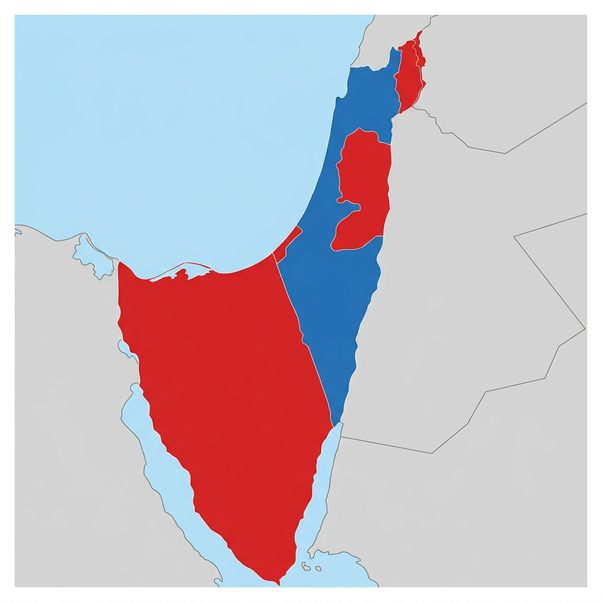
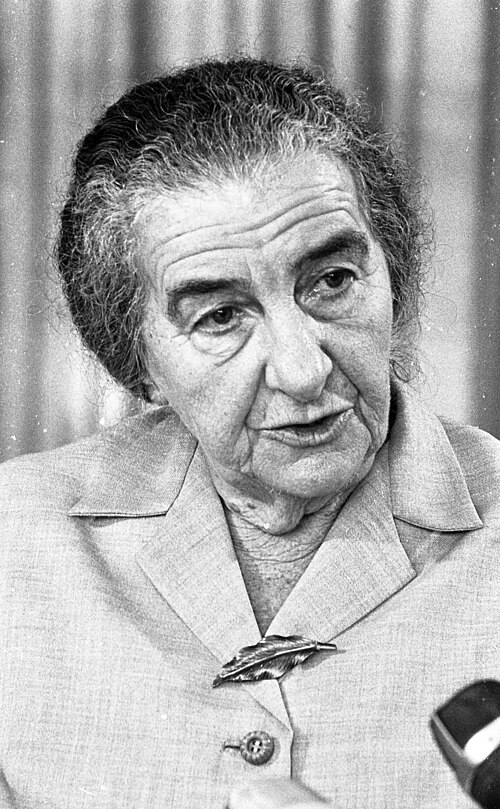

Do Now Activity
Vocabulary Check
Fill in the blanks using the vocabulary words below.
In the 1960s, Palestinian nationalism grew stronger with the creation of the [ . . . . . . . . ] , an umbrella organization, and its dominant guerrilla faction, [ . . . . . . . . ] . Border tensions flared violently when Israel launched the [ . . . . . . . . ] into the West Bank in 1966. These escalating events eventually culminated in June 1967 when Israel launched [ . . . . . . . . ] , a devastating pre-emptive air strike that wiped out the Arab air forces on the ground.
Q1. What was the primary objective of the Palestine Liberation Organisation (PLO) when it was established at the 1964 Cairo Conference?
Q2. How did the dispute over the River Jordan escalate tensions between Israel and the Arab states in the mid-1960s?
Q3. How did the new Syrian government support the Fatah guerrilla movement from 1966 onwards?
Q4. What was the outcome of the April 1967 air clash over Damascus, and how did it affect the Syrian leadership?
Q5. How did the Soviet Union's misinformation in May 1967 act as a catalyst for the crisis?
Q6. Identify two dangerous gambles President Nasser took between 15 May and 23 May 1967.
Q7. Describe the success of Operation Focus launched by the Israeli air force on 5 June 1967.
Q8. What were the key territorial conquests of the Israeli Defence Forces during the land war?
Q9. Write a narrative account analysing the key events of the May 1967 crisis that led to the outbreak of the Six Day War.
General Notes
Pair & Share Activity
Q10. Prompt: Was Israel justified in launching a pre-emptive strike against Egypt? Discuss both perspectives.
GCSE Exam Practice
Q11. Write a narrative account analysing the key events of the Six Day War (1967). [8 marks • 10 mins]
Remember to link your paragraphs chronologically. You could use these sentence starters:
- The first key event was...
- This directly led to...
- Consequently, this triggered...
- This situation culminated in...



L2: KT2.2: The Aftermath of the 1967 War
Learning Objectives
Do Now Activity
Vocabulary Check
Write a historically accurate sentence connecting two terms from the glossary box below.
Q12. How did Israel and the Arab states interpret the ambiguous wording of UN Resolution 242 differently?
Q13. What was the defiant response of the Arab states at the August 1967 Arab League Summit in Khartoum?
Q14. Explain the strategic significance of the captured territories for Israel's military security.
Q15. How did the Israeli policy of building Jewish settlements in the occupied territories impact the local Arab population?
Q16. Why did the Popular Front for the Liberation of Palestine (PFLP) hijack commercial airliners to Dawson's Field in 1970?
Q17. Why did King Hussein of Jordan view the PLO as a threat to his sovereignty by 1970?
Q18. What was the outcome of the 'Black September' civil war in Jordan in 1970?
Q19. Describe the events and consequences of the 1972 Munich Olympic Games terrorist attack.
Q20. Write a narrative account analysing the key developments in the Palestinian issue in the years 1970–72.
General Notes
Pair & Share Activity
Q21. Prompt: Why did the spectacular Israeli victory in 1967 actually make a long-term peace agreement more difficult?
GCSE Exam Practice
Q22. Explain one consequence of the Six Day War (1967). [4 marks • 5 mins]


L3: KT2.3: Israel and Egypt, 1967–1973
Learning Objectives
Do Now Activity
Vocabulary Check
Write a clear definition and a historically accurate sentence for the term: War of Attrition
Q23. How did Israel respond to Nasser's artillery bombardments during the War of Attrition, and what was Nasser's reaction?
Q24. Why did believe he desperately needed to secure the return of the Sinai Peninsula?
Q25. What was the 'Peace for Sinai' offer proposed by Anwar Sadat, and why did Golda Meir reject it?
Q26. Why did Sadat expel 15,000 Soviet advisers from Egypt in July 1972, and what was the US reaction?
Q27. What was the Bar Lev Line, and what was its purpose?
Q28. How did the Egyptian army successfully breach the Bar Lev Line at the start of the Yom Kippur War?
Q29. Describe the superpower proxy conflict that emerged during the Yom Kippur War.
Q30. How did the Arab members of OPEC attempt to force the United States to restrain Israel?
Q31. Write a narrative account analysing the key developments of the Yom Kippur War (1973) and its aftermath.
General Notes
Pair & Share Activity
Q32. Prompt: How did the Yom Kippur War change the psychological balance of power between Israel and the Arab states?
GCSE Exam Practice
Q33. Write a narrative account analysing the key events of the Yom Kippur War (1973). [8 marks • 10 mins]
Remember to link your paragraphs chronologically. You could use these sentence starters:
- The first key event was...
- This directly led to...
- Consequently, this triggered...
- This situation culminated in...



GCSE Exam Practice: Question Bank
Choose an exam question from the bank below and answer it on the blank lined pages that follow.
From KT2.1: The Six Day War, 1967
Q.. Write a narrative account analysing the key events of the Six Day War (1967).
From KT2.2: The Aftermath of the 1967 War
Q.. Explain one consequence of the Six Day War (1967).
From KT2.3: Israel and Egypt, 1967–1973
Q.. Write a narrative account analysing the key events of the Yom Kippur War (1973).